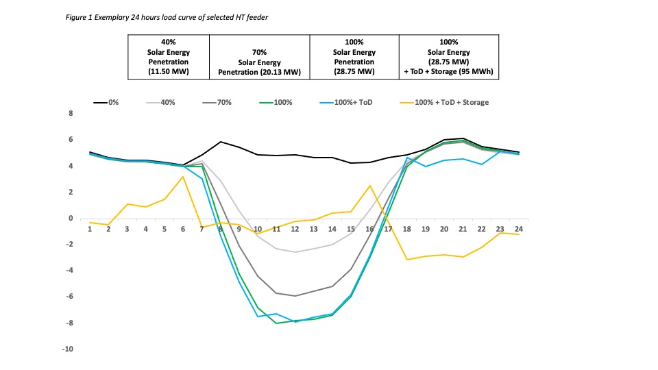
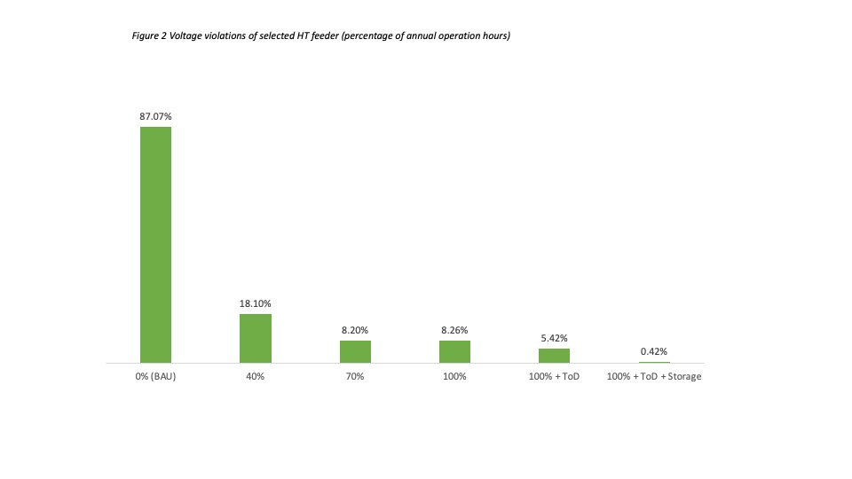
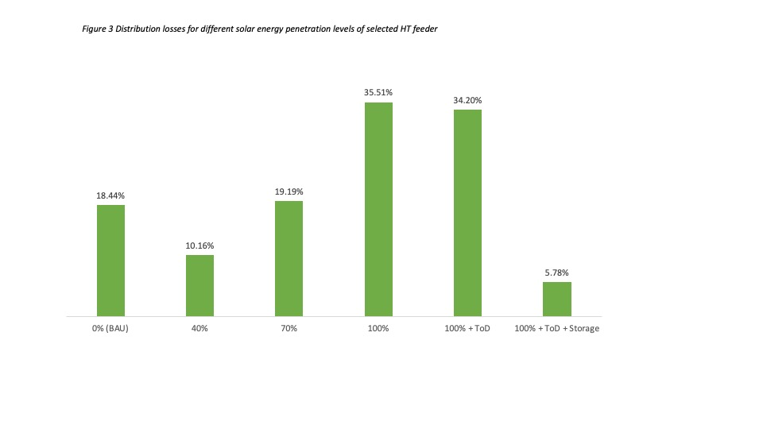

In recent years decentralised solar energy systems have gained increasing attention as they have several benefits when compared to centralized generation systems. They have a short gestation time and can contribute to meeting the growing electricity demand in India. Well planned siting of distributed solar energy generation can reap technical and commercial benefits. For example, locating it near the load centres reduces transmission and distribution losses (T&D) losses and also defers or avoids infrastructure upgrade costs while reducing cost of supply (CoS) at the same time.
Despite the benefits of distributed solar energy generation, achieving high solar penetrations presents the grid operators with challenges associated to the intermittent nature of solar energy. A recently published report by Auroville Consulting assesses the techno-commercial impact of high solar energy penetration on the distribution network. This was undertaken on 10 feeders of a selected substation in Erode district, Tamil Nadu. The approach taken maybe best described as considering the selected distribution network as an energy island – one that remains interconnected to the larger grid, draws services from it and in turn provides services to it. The objective was to explore what it takes to develop a net zero energy distribution network by introducing distributed solar energy, Time of Day (ToD) tariffs and energy storage solutions, wherein 100% of annual electricity demand is met from local solar energy generation.
The solar energy generators were interconnected at existing HT feeders in order to optimize utilization of existing distribution infrastructure assets and to reduce T&D losses. This approach deviates from the current emphasis that solar energy generators require a dedicated feeder- as it promoted for example under KUSUM-Scheme A by Ministry of New and Renewable Energy. The technical part of the feasibility analysis includes determining the feeder’s solar hosting capacities, total distribution losses and feeder level voltage violations, while the economic feasibility analysis estimates potential financial savings for TANGEDCO on account of reduction of CoS.
The results indicate that solar energy penetration levels of 40% can be accommodated by all 10 HT feeders without capacity violations. 5 feeders can accommodate a 70% solar energy penetration and 3 feeders can accommodate a 100% solar energy penetration. To achieve a 100% solar energy penetration level for all feeders the addition of energy storage is required. Introducing Time of Day tariffs facilitates a moderate reduction in peak load demand and will benefit grid operations. Figure 1 below displays the load curves for the business as usual case and for the net load of increasing solar energy penetration levels with and without ToD tariffs and energy storage.
Figure 1 Exemplary 24 hours load curve of selected HT feeder
| 40% Solar Energy Penetration (11.50 MW) | 70% Solar Energy Penetration (20.13 MW) | 100% Solar Energy Penetration (28.75 MW) | 100% Solar Energy (28.75 MW) + ToD + Storage (95 MWh) |

Distributed solar energy interconnected to existing HT feeders substantially improves voltage profiles and reduced distribution losses. Under the current scenario, without interventions (BAU case), one selected feeder exceeds the permissible voltage band for 87% of the annual operation hours. After the introduction of distributed solar energy, the instances of voltage violation are dramatically improved. Under the 100% solar energy, ToD tariffs and energy storage scenario voltage violations reduce from 80% to less than 1% of the annual operation hours (refer to Figure 2).
Solar energy penetration levels of 40% and 70% shows improvements in distribution losses over business as usual. While the distribution losses increase with 100% solar energy, as net energy flow increases, the addition of ToD tariffs and energy storage is able to reduce distribution losses from a 18.44% to a 5.78% (refer to Figure 3).
Figure 2 Voltage violations of selected HT feeder (percentage of annual operation hours)

Figure 3 Distribution losses for different solar energy penetration levels of selected HT feeder

Researchers at the World Resources Institute, India’s energy programme
Martin Scherfler
Reshma Suresh
Victor Catrib


© COPYRIGHT 2020.ALL RIGHT RESERVED.